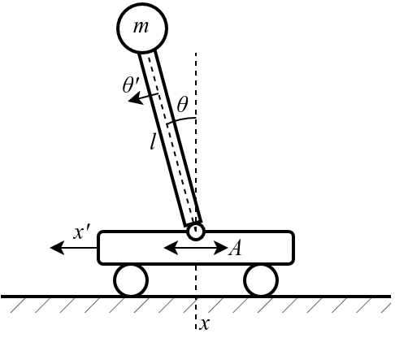

Reinforcement learning basics with CartPole model#
Problem definition#
CartPole model is a simple example of control problem in a simplified physical environment. The goal is to balance a pole with a mass \(m\) and length \(l\) on a moving cart by applying discrete forces to the cart in gorisontal direction. The environment is characterized by cart position \(x\), cart velocity \(x'\), pole angle \(\theta\), and pole angular velocity \(\theta'\). The action space \(A\) include discrete horisontal forces applied to the cart in negative (\(a=0\)) or positive (\(a=1\)) direction.
{kind=link}
The model is implemented in Gymnasium library [Car] with basics physics enabling simulation of various control mechanisms. Here the observation space is defined by a vector \((x,x',\theta,\theta')\), action space is \(A=\{0,1\}\). The agent receives +1 for every timestep the pole remains upright. The episode ends if: a) the pole tilts more than 15 degrees from vertical; b) the cart moves more than 2.4 units from the center; c) the episode length exceeds 500 steps.
Within this practical task we’ll implement and evaluate a basic RL agent to control the cart in an optimal way using Gymnasium environment with REINFORCE algorithm [Wil92].
Implementation#
Basic initialization#
First, we import necessary libraries neededd for our experimental setting and create an instance of CartPole environment from Gymnasium. We see the action space is discrete with two option (positive and negative forces). The opservation space is continuous 4-dimension space.
import numpy as np
import tensorflow as tf
from tensorflow import keras
import matplotlib.pyplot as plt
import gymnasium as gym
from tqdm.notebook import tqdm
env = gym.make("CartPole-v1", render_mode="rgb_array")
env.action_space, env.observation_space
(Discrete(2),
Box([-4.8000002e+00 -3.4028235e+38 -4.1887903e-01 -3.4028235e+38], [4.8000002e+00 3.4028235e+38 4.1887903e-01 3.4028235e+38], (4,), float32))
Simple run#
To run a basic experiment with CartPole we apply sequential steps with randome action selected with sample() method of action space in the environment.
env.reset()
term = False
trunc = False
total_reward = 0
while not (term or trunc):
env.render()
obs, rew, term, trunc, info = env.step(env.action_space.sample())
total_reward += rew
print(f"{obs} -> {rew}")
print(f"Total reward: {total_reward}")
env.close()
[-0.02803049 0.21940807 -0.01105825 -0.29289705] -> 1.0
[-0.02364233 0.02444551 -0.01691619 -0.00372216] -> 1.0
[-0.02315342 0.21980593 -0.01699063 -0.30169398] -> 1.0
[-0.0187573 0.41516587 -0.02302451 -0.5996866 ] -> 1.0
[-0.01045398 0.22037348 -0.03501824 -0.31434408] -> 1.0
[-0.00604651 0.02576741 -0.04130512 -0.0329072 ] -> 1.0
[-0.00553116 -0.16873862 -0.04196327 0.24646273] -> 1.0
[-0.00890593 0.02695676 -0.03703402 -0.05915549] -> 1.0
[-0.0083668 -0.16761516 -0.03821712 0.22161676] -> 1.0
[-0.0117191 -0.3621706 -0.03378479 0.5020037 ] -> 1.0
[-0.01896252 -0.16658913 -0.02374471 0.1988681 ] -> 1.0
[-0.0222943 0.02886425 -0.01976735 -0.10120961] -> 1.0
[-0.02171701 -0.16596891 -0.02179154 0.18517181] -> 1.0
[-0.02503639 0.02945794 -0.01808811 -0.11430509] -> 1.0
[-0.02444723 0.22483434 -0.02037421 -0.41263935] -> 1.0
[-0.01995054 0.4202391 -0.028627 -0.7116752 ] -> 1.0
[-0.01154576 0.6157455 -0.0428605 -1.0132298 ] -> 1.0
[ 7.6914678e-04 8.1141216e-01 -6.3125096e-02 -1.3190575e+00] -> 1.0
[ 0.01699739 0.6171426 -0.08950625 -1.04678 ] -> 1.0
[ 0.02934024 0.8133311 -0.11044185 -1.3661644 ] -> 1.0
[ 0.04560687 1.0096489 -0.13776514 -1.691251 ] -> 1.0
[ 0.06579985 0.8163613 -0.17159016 -1.4444416 ] -> 1.0
[ 0.08212707 0.62371564 -0.20047899 -1.209917 ] -> 1.0
[ 0.09460139 0.8207801 -0.22467732 -1.55814 ] -> 1.0
Total reward: 24.0
Experiments#
Basic Q-learning#
We implement a basic learning procedure with a neural network with one fullly connected layer (128 neurons) with observation space as an input and action space as an output.
num_inputs = 4
num_actions = 2
model = keras.Sequential([
keras.Input(shape=(num_inputs,)),
keras.layers.Dense(128, activation="relu"),
keras.layers.Dense(num_actions, activation="softmax")
])
model.compile(loss='categorical_crossentropy', optimizer=keras.optimizers.Adam(learning_rate=0.01))
model.summary()
Model: "sequential_1"
_________________________________________________________________
Layer (type) Output Shape Param #
=================================================================
dense_2 (Dense) (None, 128) 640
dense_3 (Dense) (None, 2) 258
=================================================================
Total params: 898
Trainable params: 898
Non-trainable params: 0
_________________________________________________________________
Next, we need implementation of episode simulation with sequential application of the model. We define a function that run an episode and collect a trace as a history of states, actions, probabilities returned by a model, and obtained rewards.
Additionally, we define a discounted reward function which weight a reward vector within a trace so that earlier rewards will be discounted by a coefficient gamma.
def run_episode(max_steps_per_episode = 1000):
states, actions, probs, rewards = [],[],[],[]
state = env.reset()[0]
for _ in range(max_steps_per_episode):
action_probs = model(np.expand_dims(state, 0))[0]
action = np.random.choice(num_actions, p=np.squeeze(action_probs))
nstate, reward, term, trunc, info = env.step(action)
if term or trunc:
break
states.append(state)
actions.append(action)
probs.append(action_probs)
rewards.append(reward)
state = nstate
return np.vstack(states), np.vstack(actions), np.vstack(probs), np.vstack(rewards)
eps = 0.0001
def discounted_rewards(rewards, gamma=0.99, normalize=True):
ret = []
s = 0
for r in rewards[::-1]:
s = r + gamma * s
ret.insert(0, s)
if normalize:
ret = (ret-np.mean(ret))/(np.std(ret)+eps)
return ret
s,a,p,r = run_episode()
print(f"Total reward: {np.sum(r)}")
print(f"Total discounted reward: {np.sum(discounted_rewards(r))}")
Total reward: 11.0
Total discounted reward: -6.661338147750939e-16
Simple policy gradient learning#
Here we implement a basic policy gradient method with REINFORCE algorithm. We run the CartPole model episode n_episodes times (epochs) and collect trace information. After each run, the following steps are repeated:
Selected actions are converted into one-hot encoding
one_hot_actions. E.g. vector of actions[0,1,0]will be converted into[[1,0], [0,1], [1,0].We calculate the policy
gradientsas difference between action probabilities and encoded actions being taken. This gives the direction to adjust the policy to increase the likelihood of good actions.Discounted rewards
drare calculated with the function defined above.We multiplies
gradientsby discounted rewardsdrto reinforce actions that led to higher rewards. Actions with higher rewards get larger updates.To calculate
targetwe scales the gradient by the learning ratealphaand add action probabilitiesprobsto ensure the update is incremental (avoids drastic policy changes).The
targetis used to train the model in association withstatesusingtrain_on_batch()method.
We collect training history with obtained reward. Also, the reward is shown once per each 100 epochs.
alpha = 5e-4
n_episodes = 300
history = []
for epoch in tqdm(range(n_episodes)):
states, actions, probs, rewards = run_episode()
one_hot_actions = np.eye(2)[actions.T][0]
gradients = one_hot_actions-probs
dr = discounted_rewards(rewards)
gradients *= dr
target = alpha*np.vstack([gradients])+probs
model.train_on_batch(states,target)
history.append(np.sum(rewards))
if epoch%50==0:
print(f'E: {epoch:3} R: {np.sum(rewards)}')
E: 0 R: 24.0
E: 50 R: 95.0
E: 100 R: 132.0
E: 150 R: 159.0
E: 200 R: 499.0
E: 250 R: 499.0
plt.plot(history)
plt.xlabel('Epoch')
plt.ylabel('Accumulated reward')
Text(0, 0.5, 'Accumulated reward')
Adding observation noise#
For experimental analysis of learning process with noise environment, we can modify run_episode with additive noise component to see how it will affect RL performance.
model_with_noise = keras.Sequential([
keras.Input(shape=(num_inputs,)),
keras.layers.Dense(128, activation="relu"),
keras.layers.Dense(num_actions, activation="softmax")
])
model_with_noise.compile(loss='categorical_crossentropy', optimizer=keras.optimizers.Adam(learning_rate=0.01))
model_with_noise.summary()
Model: "sequential_2"
_________________________________________________________________
Layer (type) Output Shape Param #
=================================================================
dense_4 (Dense) (None, 128) 640
dense_5 (Dense) (None, 2) 258
=================================================================
Total params: 898
Trainable params: 898
Non-trainable params: 0
_________________________________________________________________
NOISE_STD = 1e-1
def run_episode_with_noise(max_steps_per_episode = 10000):
states, actions, probs, rewards = [],[],[],[]
state = env.reset()[0]
for _ in range(max_steps_per_episode):
noise_component = np.random.normal(0, NOISE_STD, len(state)) # DEFINING NOIZE COMPONENT
state_observed = state + noise_component # ADDING NOIZE COMPONENT
action_probs = model_with_noise(np.expand_dims(state_observed, 0))[0]
action = np.random.choice(num_actions, p=np.squeeze(action_probs))
nstate, reward, term, trunc, info = env.step(action)
if term or trunc:
break
states.append(state_observed)
actions.append(action)
probs.append(action_probs)
rewards.append(reward)
state = nstate
return np.vstack(states), np.vstack(actions), np.vstack(probs), np.vstack(rewards)
history_with_noise = []
for epoch in tqdm(range(n_episodes)):
states, actions, probs, rewards = run_episode_with_noise()
one_hot_actions = np.eye(2)[actions.T][0]
gradients = one_hot_actions-probs
dr = discounted_rewards(rewards)
gradients *= dr
target = alpha*np.vstack([gradients])+probs
model_with_noise.train_on_batch(states,target)
history_with_noise.append(np.sum(rewards))
if epoch%50==0:
print(f'E: {epoch:3} R: {np.sum(rewards)}')
E: 0 R: 8.0
E: 50 R: 170.0
E: 100 R: 499.0
E: 150 R: 168.0
E: 200 R: 142.0
E: 250 R: 499.0
plt.plot(history_with_noise)
plt.xlabel('Epoch')
plt.ylabel('Accumulated reward')
Text(0, 0.5, 'Accumulated reward')
Conclusion#
It can be observed that the basic implementation of the algorithm shows relatively “unstable” behavior deviating from reaching maximal reward (here, 500). The behavior become worthier when adding noise component to state observation. However, policy close to optimal is reachable even in the observed limited conditions.